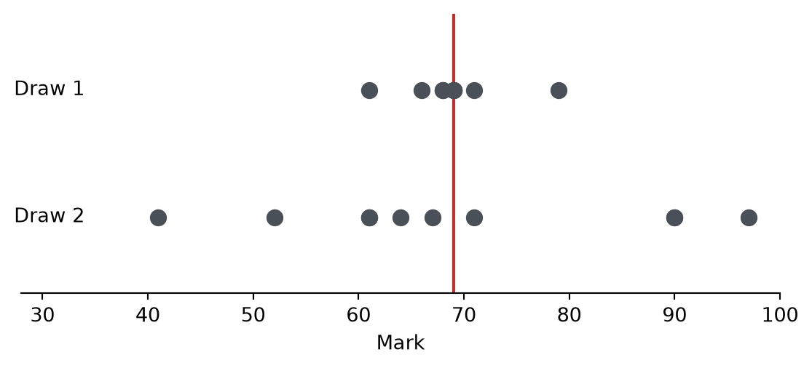
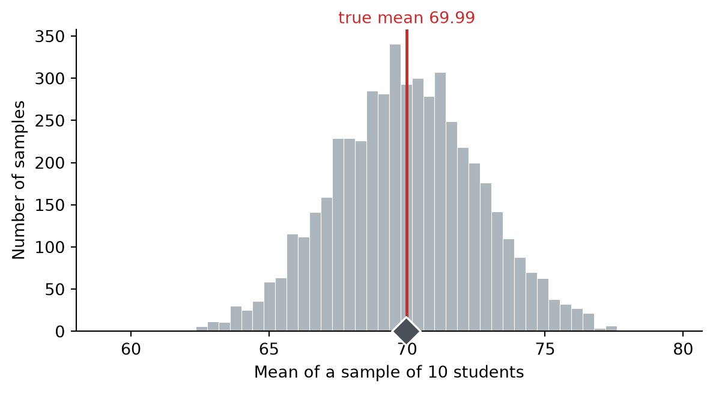
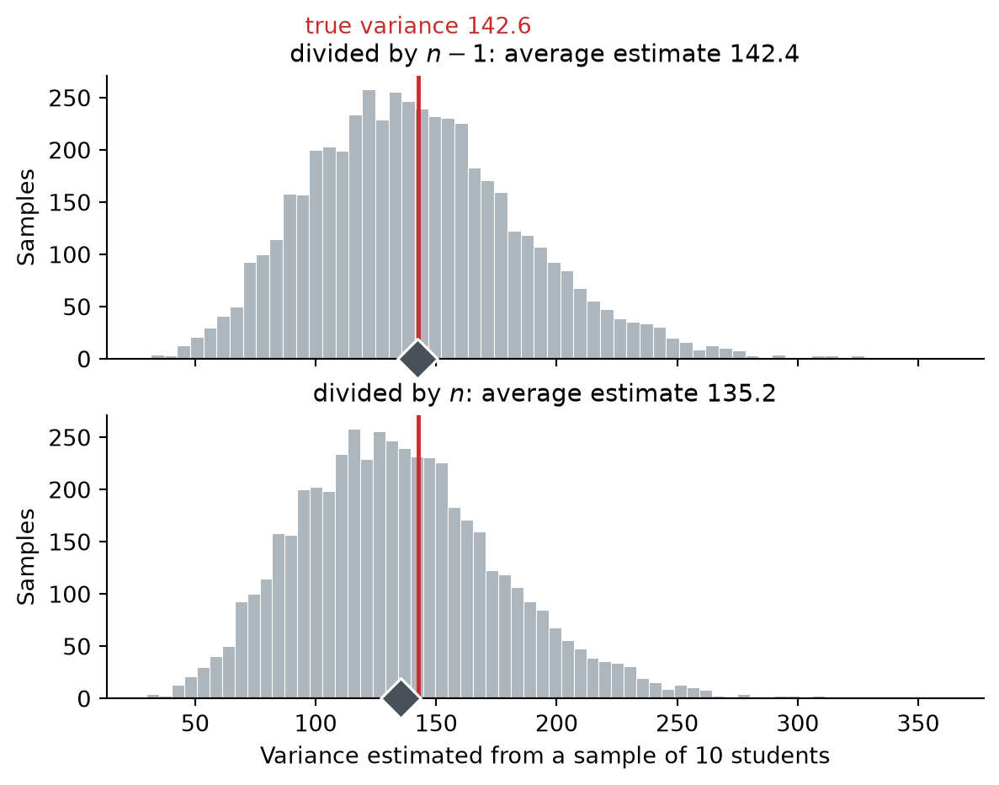

Keywords: population, sample, mean, standard deviation, variance, estimator, unbiased, biased
1.1 What we want and what we have
10,000 students are in the same year at university, and all of them took the same statistics exam, marked out of 100. Somebody wants to know how the year did.
import numpy as npimport matplotlib.pyplot as pltrng = np.random.default_rng(68)POPULATION_SIZE =10_000# The mark every student in the year received.population = np.clip(np.round(rng.normal(70, 12, POPULATION_SIZE)), 0, 100)print(f"Students: {population.size}")print(f"Lowest mark: {population.min():.0f}")print(f"Highest mark: {population.max():.0f}")
Figure 1.1: All ten thousand marks. Most students are somewhere in the sixties and seventies, with thinner tails reaching down to the twenties and up to full marks.
The group we want to describe is the population. Here it is every student in the year. A population is not always people, and it is not always this easy to point at, but the idea is the same: it is the full set of things the question is about.
We have all ten thousand marks on screen because we invented them. Real life is not like that. Getting every data point is nearly impossible in most cases. What actually happens is that somebody takes twenty students and works with those.
Those twenty marks are a sample. The sample is what we can see. The population is what we want to know about.
1.2 Squeezing a group into one number
Twenty marks is already more than you can hold in your head, and ten thousand is a lost cause. To say anything at all about a group we have to compress it, and the usual compression is the mean: add the values up, divide by how many there are. You have done this since school.
For a population of \(N\) values:
\[
\mu = \frac{1}{N} \sum_{i=1}^{N} x_i
\]
For a sample of \(n\) values:
\[
\bar{x} = \frac{1}{n} \sum_{i=1}^{n} x_i
\]
NoteNotation alert! Don’t panic.
That \(\sum\) is a capital sigma, and it is just an instruction to add things up. The \(i = 1\) underneath and the \(N\) on top say where to start and where to stop, so \(\sum_{i=1}^{N} x_i\) means nothing more alarming than \(x_1 + x_2 + \cdots + x_N\).
The two formulas above are the same arithmetic written twice. Statisticians use \(\mu\) and \(N\) when they mean a whole population and \(\bar{x}\) and \(n\) when they mean a sample.
In practice you will almost always be working with the sample formulas. We show both here because the pair of them is what makes the distinction visible. The population is the thing you want to know about, and the sample is the thing you can see. The two are not the same, and the notation is how we keep track of which is which.
print(f"Mean of the 20 students we saw: {sample.mean():.2f}")print(f"Mean of all 10,000 students: {population.mean():.2f}")
Mean of the 20 students we saw: 70.80
Mean of all 10,000 students: 69.99
Compressing also makes groups comparable. Twenty marks and ten thousand marks cannot be held up against each other in any useful way, but 70.80 and 69.99 can. That is why the mean turns up everywhere: it reduces any group, of any size, to something you can put next to any other group.
1.3 What the mean leaves out
Compression throws information away, and it is worth knowing what went missing. Here are two more draws of ten students from the same year.
fig, ax = plt.subplots(figsize=(7, 2.6))for y, data, label in [(1, draw_1, "Draw 1"), (0, draw_2, "Draw 2")]: ax.scatter(data, np.full_like(data, y, dtype=float), s=60, color="#495057", zorder=3) ax.text(34, y, label, ha="right", va="center", fontsize=10)ax.axvline(69, color="#c92a2a", linewidth=1.5, zorder=2)ax.set_xlim(28, 100)ax.set_ylim(-0.6, 1.6)ax.set_yticks([])ax.set_xlabel("Mark")ax.spines[["top", "right", "left"]].set_visible(False)plt.show()

Figure 1.2: Two draws of ten students with nearly the same mean. The mean cannot tell them apart, and yet nobody would mistake one for the other.
The two means are half a mark apart, which is as close as makes no difference. Everything else about these groups is different. Draw 1 is nine students bunched between 61 and 71 with one straggler at 79. Draw 2 contains a student who scored 41 and a student who scored 97, and not much in the middle. Report only the means and nobody would ever suspect.
So we want a second number, one that says how far from the mean students tend to sit. The obvious first attempt is to average the distances \(x_i - \mu\), and it does not work. The students above the mean and the students below it cancel out exactly, and the answer comes back zero every time, for every group that has ever existed. Squaring each distance gets rid of the sign. Average the squares, then take a square root to get back to the original units, and you have the standard deviation:
With the mean, the population and the sample formulas were the same arithmetic under different letters. The standard deviation is not like that. The sample version changes the denominator:
\[
s = \sqrt{\frac{1}{n-1} \sum_{i=1}^{n} (x_i - \bar{x})^2}
\]
Why \(n - 1\) and not \(n\)? Hold that thought. For now, let us just run the formula.
Draw 1 has ten students and a mean of \(\bar{x} = 68.9\):
print(f"Draw 1: mean {draw_1.mean():5.1f}, s {draw_1.std(ddof=1):5.2f}")print(f"Draw 2: mean {draw_2.mean():5.1f}, s {draw_2.std(ddof=1):5.2f}")print(f"\nAll 10,000 students: mean {population.mean():.2f}, "f"sigma {population.std():.2f}")
Draw 1: mean 68.9, s 4.46
Draw 2: mean 69.4, s 17.95
All 10,000 students: mean 69.99, sigma 11.94
Revisit Figure 1.2. You can now see that Draw 1’s low standard deviation shows up as points clustered tightly around the mean, while Draw 2’s points are scattered across the width of the plot. The means are nearly the same. The standard deviations tell two different stories.
One last piece of vocabulary. The quantity under the square root, the average of the squared distances, has its own name: it is the variance. Square root the variance and you have the standard deviation; square the standard deviation and you are back at the variance.
Back to the twenty students from the start of the chapter. We now have both numbers for the sample (the 20 students) and the population (the 10,000 students).
print(" mean sd")print(f"Our 20 students {sample.mean():7.2f}{sample.std(ddof=1):7.2f}")print(f"All 10,000 {population.mean():7.2f}{population.std():7.2f}")
mean sd
Our 20 students 70.80 14.87
All 10,000 69.99 11.94
Close, but the numbers are different. There is no mistake to find here. The mean of those twenty marks is computed perfectly. It is simply the mean of twenty people rather than ten thousand.
An estimator is any recipe for turning a sample into a guess about a population. \(\bar{x}\) is an estimator of \(\mu\), and \(s\) is an estimator of \(\sigma\).
Every estimate misses. That is not the interesting part. The interesting part is whether the misses have a favourite direction.
We can settle that by brute force. Draw ten students, write down the estimate, put them back, and do it five thousand times.
rng_sim = np.random.default_rng(2024)N_SAMPLE, N_REPEATS =20, 5_000picked = np.array([rng_sim.choice(population.size, N_SAMPLE, replace=False)for _ inrange(N_REPEATS)])draws = population[picked]sample_means = draws.mean(axis=1)variance_n1 = draws.var(axis=1, ddof=1) # divided by n - 1variance_n = draws.var(axis=1, ddof=0) # divided by n
fig, ax = plt.subplots(figsize=(7, 3.4))ax.hist(sample_means, bins=50, color="#adb5bd", edgecolor="white", linewidth=0.4)ax.axvline(population.mean(), color="#c92a2a", linewidth=1.8, zorder=4)ax.text(population.mean(), ax.get_ylim()[1] *1.02,f"true mean {population.mean():.2f}", color="#c92a2a", ha="center", fontsize=10)ax.scatter([sample_means.mean()], [0], s=160, marker="D", color="#495057", edgecolor="white", linewidth=1.2, zorder=5, clip_on=False)ax.set_xlabel("Mean of a sample of 10 students")ax.set_ylabel("Number of samples")ax.spines[["top", "right"]].set_visible(False)plt.show()print(f"Average of the 5,000 sample means: {sample_means.mean():.2f}")print(f"True mean of the year: {population.mean():.2f}")

Figure 1.3: The mean of each of 5,000 samples of ten students. The red line is the true mean of the year and the diamond is the average of all 5,000 estimates.
Average of the 5,000 sample means: 69.96
True mean of the year: 69.99
Individual samples land anywhere from the high fifties to the low eighties, which is a reminder of how little ten students can promise you. But average all five thousand estimates together and you get the diamond, and the diamond sits on the line.
That is what makes the sample mean an unbiased estimator. Some of the five thousand came out above 69.99 and some below, evenly matched on both counts: as many too high as too low, and by about as much. Average them and the overshoots and the undershoots wipe each other out, leaving the true value behind.
Note what this does not say. It does not say your sample statistics is not exactly the same as the population one. Unbiased is a property of the procedure, not a promise about the one result you happen to be holding.
Now the same five thousand draws, with the spread estimated two ways.
fig, axes = plt.subplots(2, 1, figsize=(7, 5), sharex=True)pairs = [(axes[0], variance_n1, r"divided by $n-1$"), (axes[1], variance_n, r"divided by $n$")]for ax, estimates, label in pairs: ax.hist(estimates, bins=60, color="#adb5bd", edgecolor="white", linewidth=0.4) ax.axvline(population.var(), color="#c92a2a", linewidth=1.8, zorder=4) ax.scatter([estimates.mean()], [0], s=160, marker="D", color="#495057", edgecolor="white", linewidth=1.2, zorder=5, clip_on=False) ax.set_title(f"{label}: average estimate {estimates.mean():.1f}", fontsize=11) ax.set_ylabel("Samples") ax.spines[["top", "right"]].set_visible(False)axes[0].text(population.var(), axes[0].get_ylim()[1] *1.15,f"true variance {population.var():.1f}", color="#c92a2a", ha="center", fontsize=10)axes[1].set_xlabel("Variance estimated from a sample of 10 students")plt.show()print(f"True variance: {population.var():7.1f}")print(f"Average with n - 1: {variance_n1.mean():7.1f}")print(f"Average with n: {variance_n.mean():7.1f}")print(f"Ratio, n version: {variance_n.mean() / population.var():7.3f}")

Figure 1.4: The variance of each of the same 5,000 samples, divided by \(n-1\) on top and by \(n\) underneath. The two histograms have the same shape. Only their position differs.
True variance: 142.6
Average with n - 1: 142.4
Average with n: 135.2
Ratio, n version: 0.948
There it is. Dividing by \(n - 1\) puts the diamond on the line. Dividing by \(n\) leaves it short. Every single one is shrunk (or inflated) by the same factor. That is what biased means.
Different estimators go wrong in different ways, and each one needs its own repair. There is no general rule that says “subtract one from the denominator” and no reason to expect one. So it is worth asking what is specifically wrong with the variance.
Look again at what we computed. Why is the mean unbiased while the variance is not? The answer is sitting in the formulas.
Look back at the formula for the mean. The arithmetic runs on the data points and nothing else. Every number that goes in came straight from the population. Now look at the variance: it measures distances from \(\bar{x}\), and \(\bar{x}\) is not the population mean. It is an estimate of the population mean, and we saw earlier that an estimate is never quite the thing it estimates. That gap is where the bias comes from.
In short: when a formula has another estimator inside it, expect bias.
TipThink it through
We repair the variance by dividing by \(n - 1\) rather than \(n\). Why does a smaller denominator push the estimate in the right direction? Which way was it wrong to begin with?
Answer
It came out too small, and the reason is a property of the mean itself: of all the points you could measure from, the sample mean is the one that makes \(\sum (x_i - c)^2\) as small as it can be. No other value of \(c\) does better.
Try it. Take Draw 1, whose mean is 68.9, and feed a few different centres through the same sum.
for centre in [60, 65, 68.9, 69.99, 75]: total = ((draw_1 - centre) **2).sum()print(f"measured from {centre:6.2f}: {total:7.1f}")
measured from 60.00: 971.0
measured from 65.00: 331.0
measured from 68.90: 178.9
measured from 69.99: 190.8
measured from 75.00: 551.0
Nothing beats 68.9, and nothing ever will, for any sample. Note in particular the row for 69.99, the true \(\mu\): it comes out higher. Had we been able to measure from the real population mean, the distances would have added up to more.
That is the bias in one line. We always measure from the centre that flatters this particular sample, so every sample looks tighter than the population it came from. A smaller denominator makes the answer bigger, which is the direction we need, and \(n - 1\) makes it bigger by exactly the right amount.
NoteThe correction is exact for the variance, nearly exact for the standard deviation
If you run the same simulation on \(s\) rather than \(s^2\), the diamond does not quite make it onto the line. The average of the 5,000 values of \(s\) comes out around 11.64 against a true \(\sigma\) of 11.94.
Nothing has gone wrong. The \(n - 1\) correction is built to make the variance land on target, and it does, exactly. Taking a square root afterwards pulls the result down by a small amount, so a little bias survives into the standard deviation. Fixing that too is possible and almost nobody bothers, because the leftover is small and shrinks as samples grow. It is worth knowing about, if only so you are not confused when you check.
1.5 Notation
Everything in this chapter came in pairs: a number describing the whole population, and the estimate of it we could actually compute. The letters keep track of which is which, and they will keep doing so for the rest of the book.
Population
Sample
Size
\(N\)
\(n\)
Mean
\(\mu\), “mu”
\(\bar{x}\), “x bar”
Variance
\(\sigma^2\), “sigma squared”
\(s^2\), “s squared”
Standard deviation
\(\sigma\), “sigma”
\(s\), “s”
Greek letters on the left, ordinary letters on the right. That is the convention across most of statistics: Greek for the truth you are after, Roman for the estimate you have in hand.